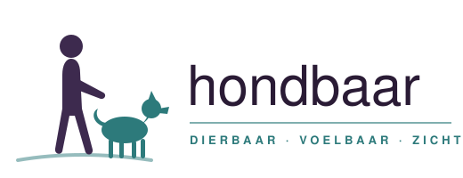

Coaching voor baas en hond · regio Ede
Een wandeling die geen wandeling meer is?
Een puppy die alles spannender vindt dan jou. Een hond die thuis een engel is, maar buiten geen oren lijkt te hebben. Herkenbaar? Bij Hondbaar leer je je hond echt begrijpen — en bouw je samen aan vertrouwen.
Dierbaar · Zichtbaar · Voelbaar
- "Mijn hond is thuis super relaxed, maar zodra we gaan wandelen wordt hij hyper."
- "Op de hondenschool doet hij het perfect, maar zodra we onze eigen wandeling lopen heeft hij bananen in zijn oren."
- "Sinds we de pup hebben is het chaos in huis. Hij is druk en wij krijgen er stress van."
- "Ik kan niet ontspannen wandelen, want hij trekt altijd aan de lijn."
- "Ik zou mijn hond zo graag overal mee naartoe nemen, maar durf het niet aan."
- "Ik zie dat hij me wel hoort, maar ik lijk niet tot hem door te dringen."
Dat is precies waar Hondbaar je bij helpt. Niet door je hond "af te richten", maar door jóu te coachen: je hond beter leren begrijpen, prikkels leren beheersen in alledaagse situaties, en bouwen aan een band waarin samenwerken vanzelf gaat.
In echte situaties
We trainen daar waar het misgaat én waar het moet landen: in de wijk, op het terras, bij het station. Gedrag dat blijft hangen.
Met video-analyse
Tijdens de les film ik mee, zodat jij alle aandacht voor je hond hebt. Achteraf bekijken we samen wat er gebeurt — en zie je het echt.
Coaching voor jou
Een hond verandert als zijn mens verandert. Daarom leer jij je hond aanvoelen, lezen en begeleiden — dat is waar duurzame verandering begint.